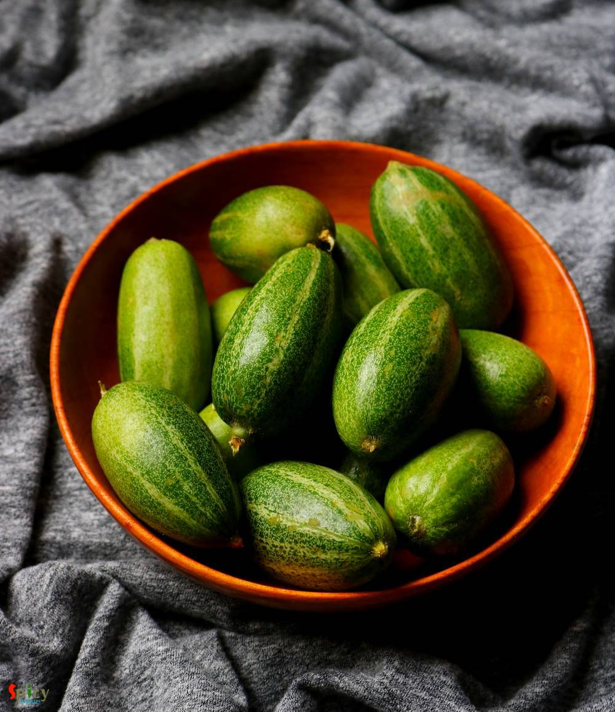
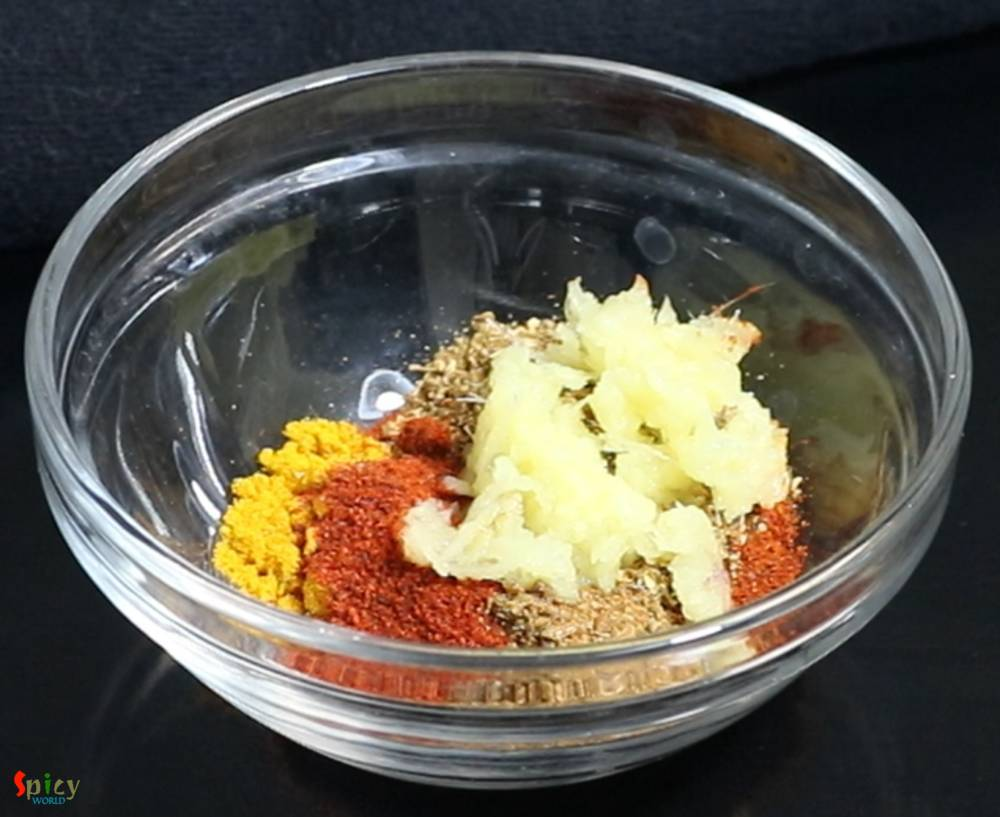
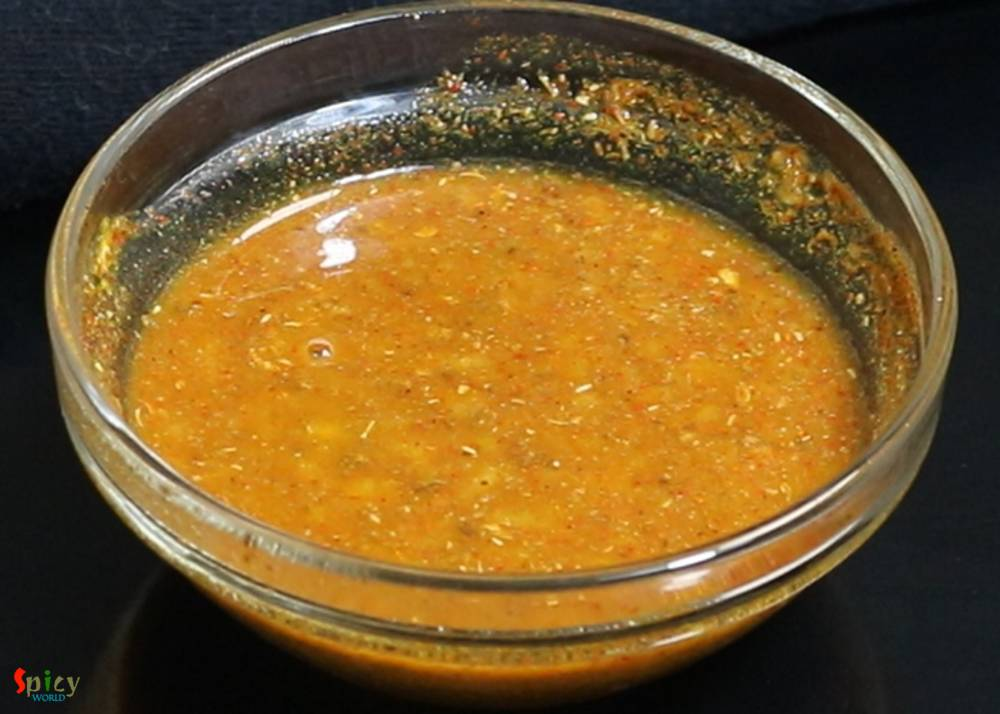
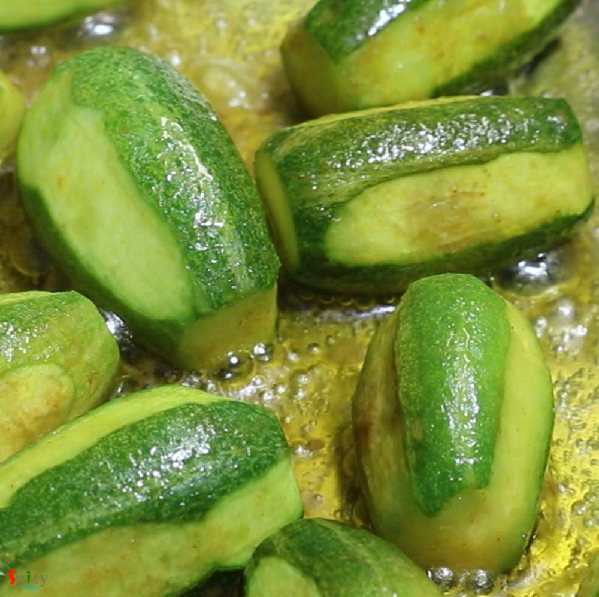
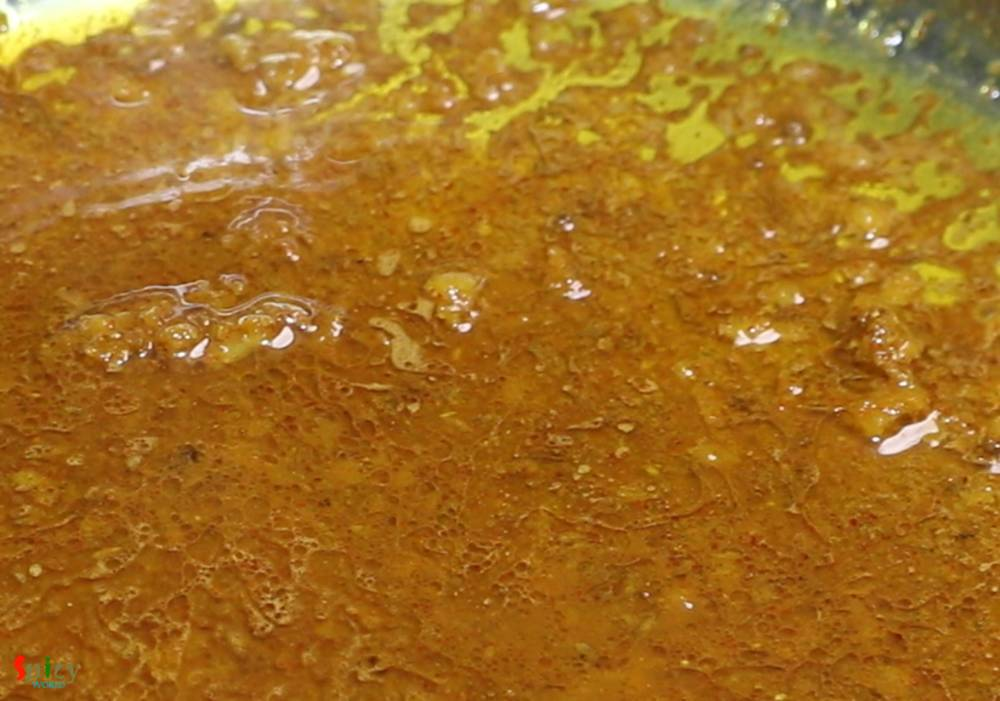
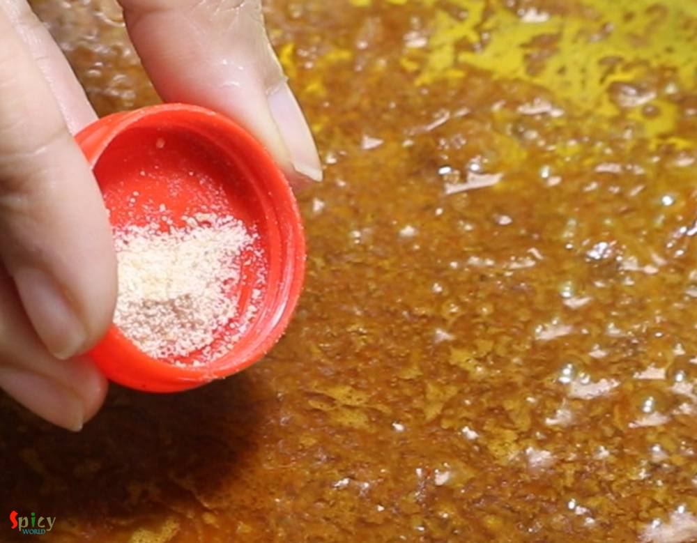
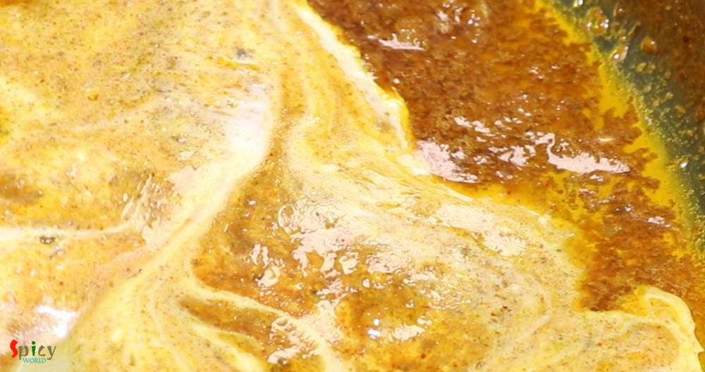
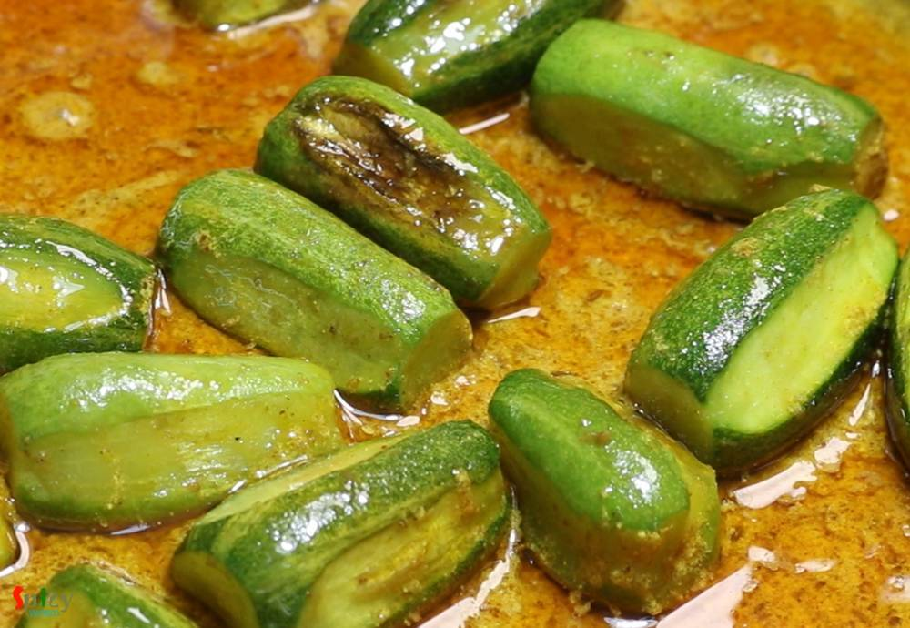
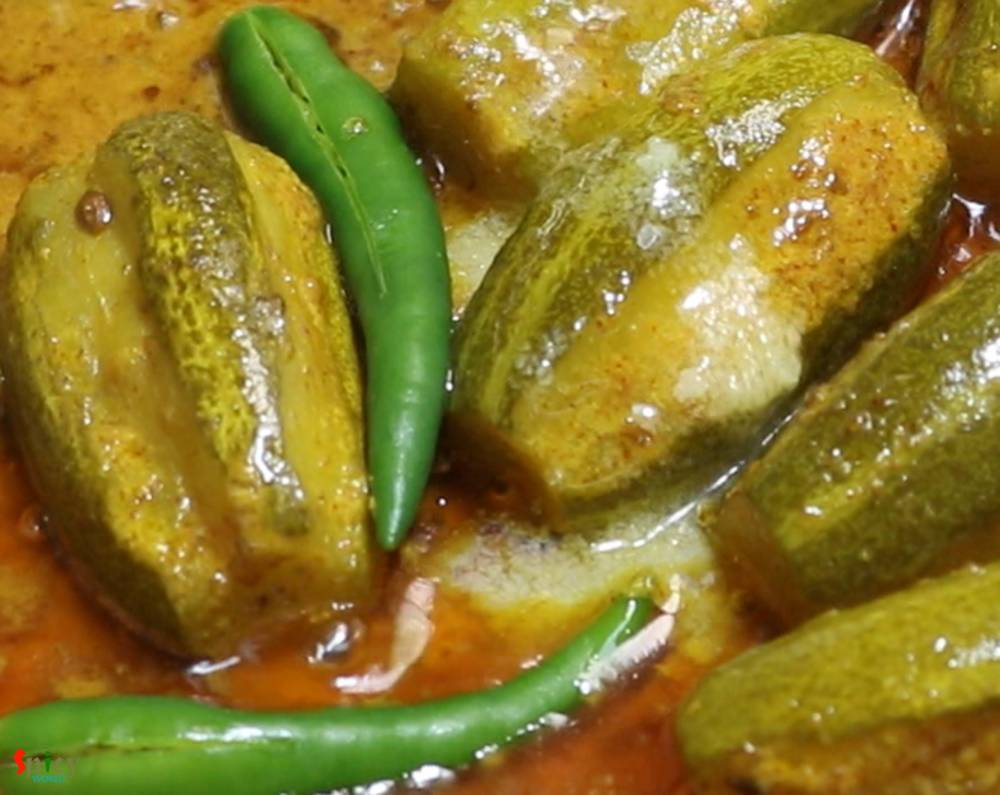
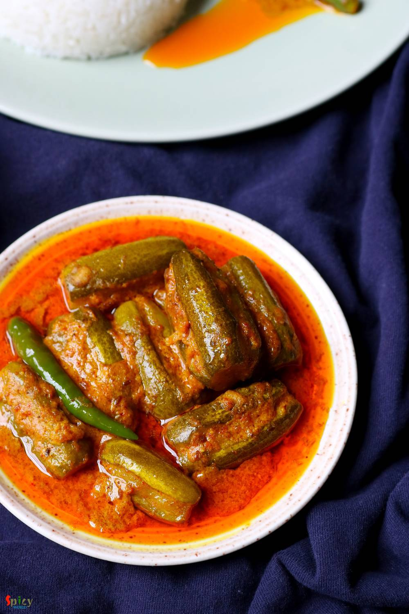

Simple and Easy Recipes
Doi Potol / Dahi Parwal
© 2016 Spicy World, Published on: Mar 2, 2019
Doi Potol is a traditional Bengali vegetarian delicacy. Potol is pointed gourd or parwal. In this recipe pointed gourd will be cooked in a spicy and tangy yogurt based sauce. I didn't use onion and garlic in this, but you can if you wish. Doi Potol goes best with plain steamed rice. I kept the recipe very simple and easy. Do try this in your kitchen and let me know how it turned out for you.

Ingredients
- 10-15 baby potol or pointed gourd.
- 3-4 Tablespoons of plain yogurt.
- 1 Tablespoon of ginger paste.
- Spice powder 1 Teaspoon of each (turmeric powder, red chili powder, roasted cumin and coriander powder, kashmiri chili powder).
- Salt and sugar as per your taste.
- Pinch of hing or asafoetida.
- Water as required.
- 5-6 Tablespoons of mustard oil.
- 2 slitted green chilies.
- 1 Teaspoon of ghee.


Steps

Wash the pointed gourd well with water. You can cook them with their whole skin on but I prefer here and there.
Now in a small bowl add all of the above mentioned spice powder and ginger paste.
Add 3 Tablespoons of water, mix well. Keep this spice paste aside for later use.
Heat mustard oil in a pan. Add the washed pointed gourd, some salt and a pinch of turmeric powder. Mix well and fry on medium flame for 7-8 minutes.
Then take them out from pan.
In that same oil, add the spice paste. Cook on low flame for 3-4 minutes.
Then add a pinch of hing or asafoetida. Mix well.
Beat the yogurt with little water very well then add in the pan. On very low flame, stir it vigorously.
Cook for 4-5 minutes or until the oil starts separating on medium flame.
Then add the fried pointed gourd, mix well for 2 minutes.
Add half cup of water, some salt and sugar, stir well and cook until they becomes soft.
Lastly add slitted green chilies and ghee, mix well and turn off the heat.
Let the curry rest for 15 minutes then serve.
Your Doi Potol is ready to serve.
Serve this hot with plain steamed rice ...
")